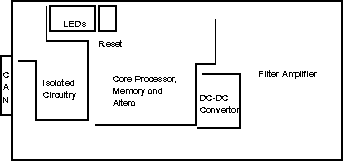
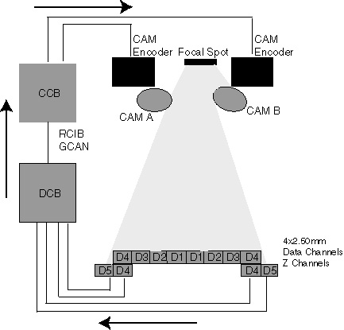
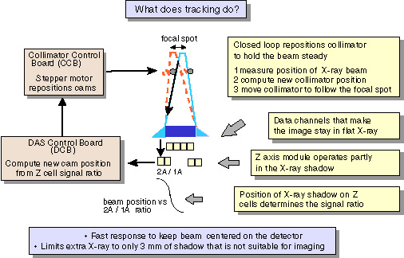
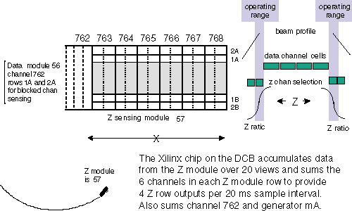
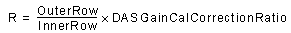
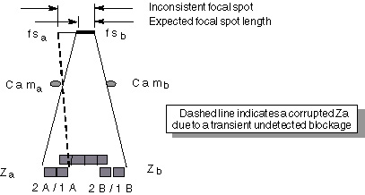
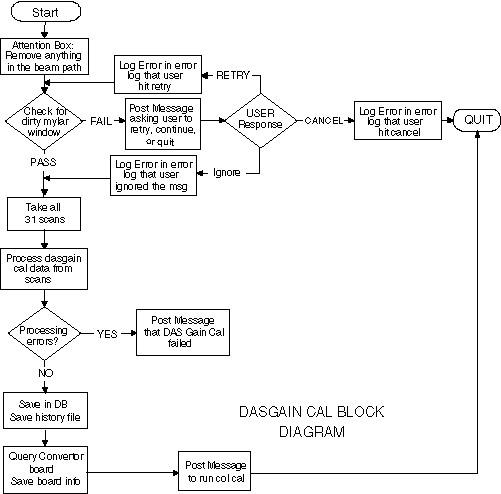

Operating Documentation
Direction 5181166-800, Rev# 7
BrightSpeed Select Service Methods Adv
Operating Documentation |
| Last Revised: | 31 October 2005 |
The mechanics of the collimator are controlled by firmware. The Collimator Control Board (CCB) is the interface between the firmware and the mechanics. The basic function of the collimator is to set the x-ray beam width at the patient and provide filtering of the beam for the proper “hardness”.
This module is split into the following sections:
Section 1 - Collimator Control Board (CCB)
Section 2 - Core Controller
Section 3 - Gantry Controller Area Network (CAN)
This Collimator Control Board has five major functions:
The Core Controller for processing and control.
Communications using the Controller Area Network (CAN) Interface with Fault & Reset signals.
CAM positioning.
Filter positioning.
Voltage regulation and referencing.
Table 1 lists the major functions of the CCB.
Table 1: Major Function List of CCB
| 1.Core controller | 9. Gantry CAN function |
| 2.CPU332 | 10.LED function |
| 3.Clock and Clock Loss circuitry | 11.Exposure Command |
| 4.Reset Bus | 12.Trigger Clock |
| 5.TPU and CAM drives | 13.System Fault |
| 6.RS232 | 14.GCAN RESET |
| 7.Power Up Configuration | 15.CAM drive |
| 8.FLASH and RAM | 16.Filter Drive |
Illustration 1 shows the location of parts on the CCB.
Illustration 1: Location of Parts (CCB)

The “Core controller” shares functionality with the controller section of the Data Acquisition Control Board (DCB). The core section consists of the processor, clock and clock processing, RS232 circuitry, Flash memory and RAM.
This comes with a 16 MHz clock and the Standard TPU (Time Processor Unit) with enhanced PPWA (Period/Pulse-Width Accumulator). The TPU is essentially a dedicated processor for time related functions.
The processor clock is derived off a 32.000MHz crystal oscillator, which is divided down to 16 Hz, which is fed into the processor. The clock runs through the processor and exits the chip at the CLKOUT pin before feeding the rest of the board. If the clock stops for over 9.9 mS, the missing pulse detector will pull the reset bus line low and set the clock loss bit in the Altera. This bit can only be reset by firmware command (or power cycling).
There is one central Reset line on the CCB. This central line connects the CPU, the pushbutton reset, the external GCAN reset, the Background Debugging Mode connection, the Altera, and the 82527 CAN controller.
The external GCAN reset is applied by commanding GCAN_RST_P high relative to GCAN_RST_N. This puts the board into reset.
The CPU does not interface directly to any external devices. It buffers the signals through HCT244 devices. The following are inputs from external devices:
The CAM and Filter encoder signals are buffered inputs to the TPU as are the filter home switch and the DAS trigger signal. The Filter C pulse and the filter home switch are combined to form the filter home signal. The TPU is set up to decode the quadrature of the encoders and provides a 16 bit counter for each axis position.
The filter home switch contacts and the filter encoder C pulse are also buffered to the DATA bus through the “INREG” register (U24). That is the only register outside of the Altera used for data.
Outputs from the TPU are for the CAM and filter drives and these are buffered out through an HCT244.
The TPU has a stepper motor control algorithm that is used for the CAM drives. The firmware sets of the TPU with the acceleration and deceleration rates and the step rate. When it sets the desired position the TPU takes care of the actual move. It is set up now for half step commands to the Vexta 5 phase stepper driver at a rate of 2000 steps per second for a standard aperture move.
The RS232 link is on the board purely for development reasons.
The Data3, Data9 are held low on reset to configure the 68332. Data3 low on reset release configures the /CS6 pin to be ADDR19 so we can access 1 MB of memory. Data9 low on release of reset turns the IRQ[7:1] lines into PortF outputs. Holding MODCLK low configures the 68332 to use an external clock source.
The memory for the CCB consists of 8 Mbit (1 Mbyte) of 120 nS FLASH and the same amount of 55 nS RAM. The FLASH interfaces directly to the 68332. The RAM does not. The DCB uses the the same boot firmware. ADDR0 is not used on the memory. The read/write decode from the Altera handles the byte selection.
A CAN (Controller Area Network) is used to communicate with the Inverter or the DAS. This is a serial link with a protocol and hardware interface. As part of our CAN physical connection we include application specific signals such as: GCAN (Gantry CAN) fault, Fault2, Exposure Command, Triggers and GCAN Reset.
The CAN controller chip is an Intel 82527. Firmware writes and reads from this chip to send and receive messages via the CAN. When pin 2 of the HCPL7101 is high, the output (pin 6) is high. The outputs (pins 6 and 7) of the 82C250 will be floating. This is the “recessive” bus state on the network. A logic zero from the 82527 will result in GCH (Gantry Can High) being pulled to high and GCL (Gantry Can Low) being pulled low.
The 82527 has two ports on it: one is used as the data bus interface to the rest of the board; the other is used to light LEDs. The function of these LEDs are defined by firmware.
The exposure command signal comes from the Inverter and is opto-coupled into the collimator control board. When Exposure_Command_P is high relative to Exposure_Command_N, the exposure command signal output of the opto-coupler is high. This signal goes into the Altera device and where the state of the signal is latched and an interrupt to the processor is created.
This signal also comes from the Inverter and is buffered through an HCT244 and sent to the TPU in the 68332.
The CCB has three methods of telling the system it has a fault: by the CAN bus, the fault line driven by the CAN driver, and by the serial Fault2 line. When the firmware senses a fault, it writes to the Altera to create a GCAN_FLT_TX signal. This signal drives an isolated 82C250 CAN interface chip and opens a solid state relay. The relay opens the loopback line that runs from the Inverter, through the Collimator, through the DAS, back through the Collimator and the Inverter. These boards will detect an open and react to the fault. Both the GCAN FLT and the FAULT2 readback signals go to the Altera where they create an interrupt and are latched for reading by the firmware.
This signal comes from the Inverter and is opto-coupled into the collimator control board. When GCAN_RST_P is high relative to GCAN_RST_N, the GCAN_RST* signal output of the optocoupler is low. This then creates a board Reset just as pushing the Reset pushbutton would do.
The CAM drive function consists of the clockwise and counterclockwise pulse commands to the stepper motor driver, encoder feedback, the driver disable signal and the driver current cutback inhibit signal. The clockwise and counter-clockwise pulses are derived in the Altera from quadrature pulses created by the TPU in the 68332. The rate of these is under firmware control. The TPU also decodes the encoder signals to keep track of the count and direction of movement.
Two control signals from the 68332 are for controlling the behavior of the Vexta, 5 phase stepping motor driver. Essentially the 68332 writes to a register to set the signals CURR_HOLD and CAM_OFF_OUT.
When CURR_HOLD is high, it turns on FET Q35 and prevents the stepping motor driver from automatically decreasing its drive to the motor. Normally the current gets cut back by half after a move because it is not needed for acceleration and movement.
When the CAM_OFF_OUT signal goes high, it turns on a FET Q36, which turns off the stepping motor driver and allows the CAMS to “freewheel”.
The filter driver is a basic H-bridge with high side current sensing for each phase. Sensing the high side allows protection for output shorts to ground. The stepping signals come from the TPU and decoded by the Altera to sequence the high and low FET drive signals.
The current limit circuitry is the same for both phases. An instrumentation amplifier with high common mode rejection senses the current through an effective 0.25 ohm resistance. The output of the amplifier is then fed into two comparators. One comparator is for pulse to pulse current limiting and the other is the short circuit latch comparator. For pulse to pulse current limit, the voltage regulators are divided down to create a reference voltage. This reference is fed into the comparator and when the output from the sensed current exceeds the reference, the comparator switches and shuts off a latch, which turns off the top FET. This cycles at a 15 kHz rate because of the clock into the latch.
The short circuit protection circuitry uses the same concept as the pulse to pulse limit except on a short, the rate of rise of the current is so fast that the current sensed can rise to just over 10 A. This is limited by the 6.8 uH inductor on the board and the reverse recovery charge of the lower FET's parasitic diode. As the current passes the short circuit reference voltage, a comparator switches in a latch that cuts off drive to the top FETs. Only firmware can reset this latch so current stays off after a short until firmware commands otherwise.
The Current Cut back function drops the current to the filter. This keeps the motor from unnecessarily dissipating power when it is not moving. The firmware can command this, which then turns on Q5. When Q5 is on, it drops the pulse to pulse current reference.
The H-bridge uses two high side gate driver chips per phase. These create floating voltages to drive the top FETs without transformers or optical circuitry. The resistor - diode combinations around the inverters which feed the gate driver chips and the gates of the FETs are set up to prevent "shoot through" or simultaneous conduction. This is prevented by turning on the FETs slow and turning them off fast. The SD signal into the ir2110 devices disables drive until a command occurs. Holding SD high disables the driver.
The filter home switch tells the CCB when the filter is physically positioned “at home” of course. It does this by feeding back the normally open and normally closed contact signals, which can be read at register U24 (Address 0x800000/1 in the memory map). When at home, the normally open switch is closed and the normally closed switch is closed.
The voltage regulators create voltages for the FET gate drivers (12V), and the instrumentation amp (± 8V). The 8V signal is for the pulse to pulse and short circuit currents.
The Altera functionality is covered in the Programmable Device Logic (PDL) specification 2208487PDL.
With the exception of the INREG register (Address 0x800000), the input and output registers are in the Altera.
Writing a logic one to bit one of the output register will reset the Fault interrupt regardless of the source of the interrupt. The interrupt is generated on the leading edge of the fault signals. There are two fault signals, one is from the CAN (controller area network) and this can also be commanded by firmware on the CCB. The fault signal is created by a break in the loopback wire of the CAN connectors.
Table 2: Collimator Output Registers
| BIT | ADDRESS FFA009 | OUTPUT REGISTER | |
|---|---|---|---|
| WRITE ONLY | LOW CONDITION | HIGH CONDITION | |
| 0 | Fault Interrupt Reset | No Action | Clears Fault Interrupt |
| 1 | |||
| 2 | |||
| 3 | |||
| 4 | |||
| 5 | |||
| 6 | |||
| 7 | |||
Within the Altera chip there is a timer-counter function. One function provides 125 kHz for the quadrature decode functions and 15.6 kHz to the filter amplifier circuitry on the CCB. Both these clocks are derived from the 16 MHz crystal derived clock.
For the Z-Axis function there is a 14 bit “up” counter with a clock of 3906 Hz derived from the 16 MHz system clock. The timer function comes from the ability to load a digital comparator that compare the value loaded by firmware against the value of the counter. Firmware is given the capability of asynchronously loading the counter, clearing the counter and masking the interrupt that is generated when the compare and count value match.
There are 3 control signals that configure this function:
Table 3: Collimator Z-Axis Control Signals
| CONTROL | ADDRESS | DESCRIPTION |
|---|---|---|
| cntctlwr | FFA00A | Clocks in the control bits that configure the counter. |
| cntlo_wr | FFA00B | Clocks in the low byte of the 14 bit compare word. |
| cnthi_wr | FFA00C | Clocks in the high byte of the 14 bit compare word |
| cnctlwr is
generated by a WRITE to address FFA00A cntlo_wr is generated by a WRITE to address FFA00B cnthi_wr is generated by a WRITE to address FFA00C | ||
The interrupt is generated when the count matches the compare value.
The collimator register is used for collimator specific functions. It allows the firmware to command and readback status on the filter drive amplifier currents and also allows the firmware to shut down the collimator cam drives.
The purpose of tracking is to follow the focal spot so that the system can keep the umbra of the beam on the detector to reduce dose and still avoid artifacts.
Dose reduction is approx. 40% less in the 4 x 1.25mm mode and 25% less in the 4 x 5.00 mode.
Z-Axis tracking is needed because the focal spot moves in Z due to thermal changes in the tube, and in mechanical forces during Gantry rotation and tilt.
Z-Axis tracking involves the X-Ray Tube Focal Spot, Collimator, Detector, DAS, DCB, CCB, and RCIB/GCAN Communication Networks.
Illustration 2: Typical Tracking Feedback Loop

The purpose of tracking is to follow the focal spot so that we can keep the uniform X-ray of the narrowest possible beam on the detector to reduce dose and still avoid artifacts. The focal spot moves in Z due to thermal changes in the tube and a mechanical forces during gantry rotation and tilt angle. Each cam is basically an independent system.
Illustration 3: Tracking Diagram

Select a safe operating point at the edges of the detector (target beam position at isocenter).
Sample X-ray beam position every view and adjust collimator CAM positions every 20 ms. to keep the beam at the ISO center channel operating point.
Compute Z ratio for each side of the Z module (outer row)/ (inner row). (Channels 763, 764, 765, 766, 767 & 768.)
Convert the ratio to a beam position at the Z module.
Compute the focal spot position given the beam position on the Z module, the cam position for the Z module, and geometric magnification factors at the Z module.
Compute the new cam position for the isocenter channel given the focal spot position and geometric magnification factors for the isocenter channel. During views when portions of the patient, patient table, IV line etc. block the Z module, the beam position measurement can not be used.
We will compare DAS data channel 762 (data channel adjacent to the Z module) to an expected signal as a function of the measured mA, DAS gain, and trigger period. The Z module is blocked if either inner row is less than 0.9 times the expected value. During a blocked condition, the cams will hold constant at the last unblocked position.
| NOTE: | Transient conditions during a tube spit do not require special action. |
Measure the beam position and readjust the collimator approximately every 20 ms.
Scan aborts will occur when the following conditions exist.
Beam position on detector, non-blocked z-chnls condition, is out of tolerance by +/- 0.4 mm of desired position for more than 100 mSec.
Signal Corruption of chnls 762 through 768, where zero or negative values (counts) are detected for more than 200 mSec OR generator mA feedback to DCB is less than 4 mA for more than 200 mSec.
Focal spot length error for more than 4000 mSec
Illustration 4: Z Sensing Module

| NOTE: | Z module cells can be switched independently of the data channels to provide the optimum tracking z-ratio. |
The x-ray signal output of DAS Channel 762 is characterized during FASTCAL (Air Scan with No beam obstructions). During patient scanning, if the x-ray signal on DAS channel 762 falls below 10% of the signal characterized during FASTCAL, then it is considered “blocked” and the collimator CAMS will hold constant at the last “unblocked” position.
The Z-Channels are DAS channels 763, 764, 765, 766, 767 & 768.
Each DAS Z-channel is a combination of 2 detector channels in the X direction.
Z-Channels have a different Detector Row selection than Data channels. This is selected by the Z-FET control lines.
Beam position is determined by the following equation:

The R value is then transformed into a 4th degree polynomial to find the Z-Axis Beam position, which determines beam width at detector (mmd) and focal spot length (mmf).
mmd = millimeters at detector
mmf = focal spot length in millimeters.
| NOTE: | Errors are reported by the system in umd (micrometers at detector) or umf, due to computational accuracy. |
OVERRIDES: value = {
RX_OVERRIDES: value = 0xa
FILAMENT_I: value = 0.0000
ANODE_DAC: value = 0x0
CATHODE_DAC: value = 0x0
ROTORSPEED: value = ROTOR_SPEED_HIGH
XRAY_DELAY_SEC: value = 0.0000
XRAY_DURATION_SEC: value = 1.0000
DCB_OVERRIDES: value = 0x20Puts the DCB into over-ride mode so FET control can be selected.
CANNEDDCBPATTERNSELECTION: value = 0x0 CANNEDCNVPATTERNSELECTION: value = 0x0 AUTOCORRECTIONDISABLEMASK: value = 0x0 INNERCHANNELCONTROL: value = 0x3
Controls the Center DAS Chassis FET configuration
OUTERCHANNELCONTROL: value = 0x3
Controls the Right and Left DAS Chassis' FET configuration
ZCHANNELCONTROL: value = 0x9
Controls the Z-Channel FET configuration (Channels 763, 764, 765, 766, 767 & 768)
INJECTEDDCVOLTAGE: value = 0x0
CCB_OVERRIDES: value = 0x2
Puts the collimator Control Board in over-ride mode
COLLIMATORWIDTH: value = 0x22c4
Keeps the collimator Cams wide open to flood the Detector
| NOTE: | Note:
For illustrations of FET modes for Data and Z Channels, select the PDF icon, |
During some conditions the Z module measurement can be corrupted due to a transient undetected blockage or due to a tracking loop malfunction. These conditions can be detected, identified by the DCB firmware, and reported to the gesyslog.
The focal spot length is computed on each sample interval from the measured Z and Cam positions.
If Z measurements from each side are both valid, then the computed focal spot length should be close to the expected focal spot length from FastCal.
If the computed focal spot length is not within tolerance of the focal spot length determined during Fast Cal then the control loop will hold the current cam positions.
If the inconsistent length condition continues for more than 400 msec without a normal blocked channel indication from channel 762, then the loop is assumed to be malfunctioning and the scan is aborted.
Illustration 5: Focal Spot Length Check

Takes 4 scans (1 scan at each Patient Acquisition Mode). If a 20 view average of channel 762 falls below .95 of the expected value, then an error prompt informs the user to check and clean the Mylar window.
Scans are taken without tracking and the collimator fully open to flood all detector rows.
Technique is 80KV / 20mA / 1 Sec. / Air Filter
Mylar window check is completed before DAS Gain Cal, Collimator Cal, and FASTCAL.
For more information, see “Dirty Mylar Window Scan,” in FastCal procedure.
Characterizes the differences in DAS Gain (gain ranges 1-31) for DAS channels 762 (used for blocked channel detection) and Z-Channels (763, 764, 765, 766, 767 & 768).
The differences are a result of Pre-Amp Gain Capacitor tolerances on converter boards 47 and 48.
The serial numbers of converter boards 47 and 48 are queried and stored during DAS Gain Cal. Collimator Cal and FASTCAL query the DAS and compare the serial numbers since the last time DAS Gain Cal was completed.
A DAS Gain Cal is required whenever DAS Converter boards 47 or 48 are swapped or changed.
DESCRIPTION
DAS Gain calibration is required to support Z axis tracking. The ratio formed by the Z modules that is used as the basis for beam positioning is effected by the DAS gain selection. Capacitor tolerances on the DAS converter cards can change the ratio causing a beam position error. To avoid this error we measure the outer to inner row gain variation to develop a Z ratio correction factor for each gain selection.
DAS Gain Cal also determines a gain independent blocked channel threshold for the inner rows of DAS channel 762 for the tracking firmware. This gain factor is used to scale the gain normalized blocked channel scale factor to the proper level in the tracking firmware.
The DAS Gain cal flowchart is shown below. Before DAS Gain scans are taken, a mylar window check is done to ensure that the window is clean. Otherwise it can corrupt the tracking cals.
If the check succeeds, the DAS gain scans are taken and the cal proceeds forward. If the check fails, a pop-up is posted asking the user to provide inputs on whether they want to quit, continue anyway or retry the mylar window check after cleaning the mylar window.
Illustration 6: DAS Gain Cal Block Diagram

DAS GAIN CAL SCANS
DAS Gain Calibration consists of 31 scans that are taken consecutively.
Stationary / 120KV / 20mA / 0.3 Sec / Air / Gain 1
through
Stationary / 120KV / 20mA / 0.3 Sec / Air / Gain 31
Processing is completed after all scans are completed.
Total time is approximately 4 minutes.
DAS Gain Cal takes 31 scans to collect signal data for all DAS channels at each of the 31 DAS gain settings using the DAS Gain protocol file.
Characterizes the beam position based on x-ray signal vs. collimator encoder position.
Eighteen Air scans are taken: one for each available application data collection mode.
All scans with z-tracking off
Scan time is 5.9 seconds
Thin Twin is 6.5 seconds
Stationary Scans
Offset from Nominal: ±900 cts.
#of views: 100 at each step
Step size: 50 cts.
# of steps: 37
FASTCAL completes 1 Collimator Cal (Sweep) Scan each time FASTCAL is run.
Collimator Aperture Test (see Collimator Functional Diagnostic Tests).
DAS Tools (see DAS Tools)
DAS Tools
Tracking Analysis. See Scan Data Analysis Tools (SCAN, Tracking dd, CAL)
Diagnostic Data Collection (see Diagnostic Data Collection Tool).
FET Override mode
Create and apply non-tracking Cal and DDC Scan
Z-AXIS ERROR CODES
Many of these messages contain variable fields for which some text or values will be substituted.
Table 4: Z-AXIS Tracking Error Codes
| ERROR CODE | ERROR CODE TEXT | LOG LEVEL | HOST |
|---|---|---|---|
| 260007445 | "%sUnable To Notify Z-Axis State Machine Of Event.\n\ Error code %d received." | log | myhost> |
| 260007446 | "Z-Axis Configuration Table" | log | myhost> |
| 260007447 | "%sThe DCB Z-Axis Hardware FAILED to Generate an Interrupt during the Self Test.\n\ Possible DCB Z Axis Tracking Hardware Failure." | log | myhost> |
| 260007448 | "%sThe DCB Z-Axis Hardware Generated an UNEXPECTED Interrupt during the Self Test.\n\ Possible DCB Z Axis Tracking Hardware Failure." | log | myhost> |
| 260007449 | "DCB Z Axis Circuitry Test" | log | myhost> |
| 260007450 | "%sThe Beam Tracking Algorihtm Encountered a Division by Zero." | log | myhost> |
| 260007451 | "%sThe Prescribed Scan Has Not Been Calibrated For Beam Tracking.\n\ Data Setting: %d Z Setting: %d" | log | myhost> |
| 260007452 | "%sA Beam Tracking Feedback Message Contained an Invalid Move Sequence Number.\n\ This Indicates a Z-Axis Move Was Potentially Skipped.\n\ Update Seq #: %d\n\ Expected Seq #: %d" | log | myhost> |
| 260007453 | "%sTwo Or More Tracking Messages Are Outstanding From The Collimator.\n\ Current Sequence #: %d" | log | myhost> |
| 260007454 | "%sBeam Tracking Calculated A Focal Spot Size That Has Exceeded The WARNING Tolerance.\n\ Tolerance : %6d umf\n\ Caclulated Size: %6d umf\n\ Nominal Size : %6d umf" | log | myhost> |
| 260007455 | "%sBeam Tracking Calculated A Focal Spot Size That Has Exceeded The ABORT Tolerance.\n\ Tolerance : %6d umf\n\ Caclulated Size: %6d umf\n\ Nominal Size : %6d umf" | log | myhost> |
| 260007456 | "%sBeam Tracking Control Loop Error Exceeded The WARNING Tolerance.\n\ Tolerance : %6d umd\n\ Control Error : %6d umd\n\ Beam Side : %b" | log | myhost> |
| 260007457 | "%sBeam Tracking Control Loop Error Exceeded The ABORT Tolerance.\n\ Tolerance : %6d umd\n\ Control Error : %6d umd\n\ Beam Side : %b" | log | myhost> |
| 260007458 | “A Side” | log | myhost |
| 260007459 | “B Side” | log | myhost |
| 260007460 | "%sScan ABORT -- Beam Tracking Detected Signal Corruption.\v\ mA Level: %ld\v\ Z Channels : %ld, %ld, %ld, %ld\v\ Offset Vector: %ld, %ld, %ld, %ld" | log | myhost |